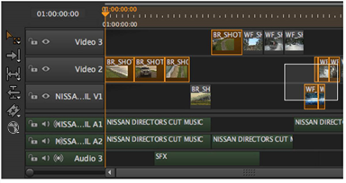
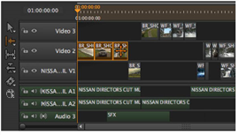
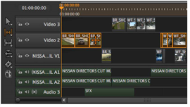
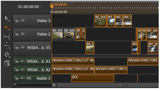

时间轴编辑工具包括选框选择工具和几个上下文相关的轨迹选择工具。
字幕 选择 工具，通过单击工具或按 Q 三次，允许您通过套索剪辑实例快速进行多个选择。
保持 转变 添加到选择和 Alt 从选择中减去。

轨道选择工具，通过单击工具或按激活 W ,根据初始选择选择多个项目:
• 选择向右的轨迹 或 左 -在单个轨迹中选择目标片段实例右侧或左侧的所有片段实例。

• 在轨道中选择全部 -目标轨迹上的所有剪辑实例都将被选中，而不考虑选定的项目。

• 向右选择所有轨迹 或 左 -目标项目右侧或左侧的所有剪辑实例都被选中，无论它们占据哪个轨道。

|
|